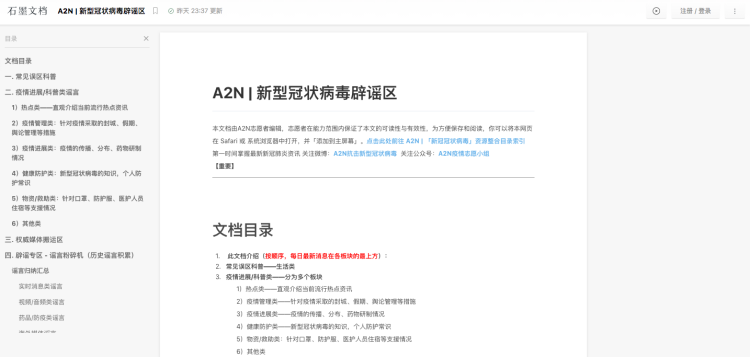
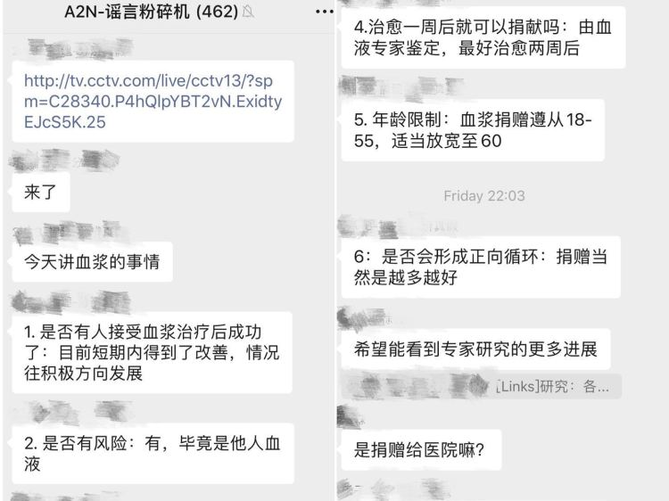
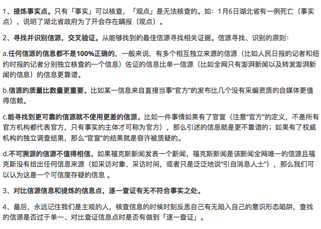
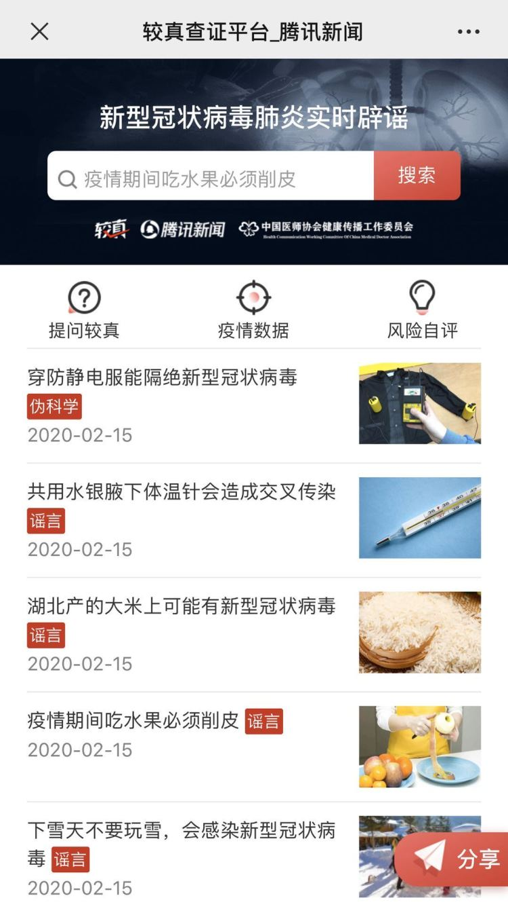
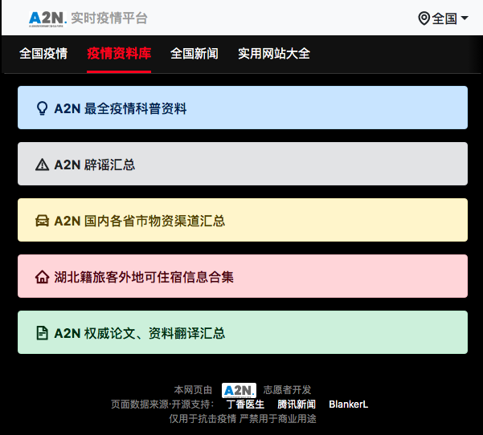

“90后”网络辟谣小分队
原文链接 备份链接 A2N的全称是Anti-2019-nCov，寓意“抗击新型冠状病毒”。 全文2632字，阅读约需5分钟 武汉“90后”互联网创业者杨慧杰决定辟谣是从母亲囤积板蓝根开始的。 疫情暴发后，网上一度流传“喝板蓝根、熏醋可以 …
1月20日开始，围绕新冠肺炎的各类信息进入爆发期。
“板蓝根可预防肺炎”、“抽烟喝酒可抵御病毒”，在谣言四起的同时，23日我在微信朋友圈注意到，一条名为《接力编辑：关注新型冠状病毒的可靠信息与谣言》的石墨文档被频繁转载。
根据文档中的文字说明，笔者加入了疫情志愿组A2N（全称为“Anti-2019-nCoV”抗击新型冠状病毒），并自主划分进入辟谣工作小组进行志愿工作。
加入这个组织的初衷很简单，一是出于职业好奇，再者是此情此景下被文档中结尾的话击中：此后如竟没有炬火，我便是唯一的光。

的确，面对突如其来的疫情与瞬息万变的事态面前，我们大多数人都在为焦虑寻找一个出口和寄托，最好能通过一己之力做些有益的事情。
且当时关于疫情的一手信息极度匮乏，谣言四起，社会中又缺少一个平台或机构及时处理这些谣言，这个民间小组的出现正好填补了这个缺口。
A2N志愿小组1月22日由几位90后为遏止新冠肺炎相关谣言而创立，并很快得到全国各地志愿者的响应。其工作内容从科普与辟谣，逐步扩大到疫情相关的数据、社会资源整合、对接物资等方面，建立分化了翻译组、辟谣组、科普组、物资组、文档组等各类志愿小组。
而回想起当初，在笔者刚加入志愿辟谣组的第3天，赶上辟谣工作小组通过钉钉的远程电话会议。
那时候A2N刚步入辟谣工作的正轨与其它项目工作的展开，没有具体的工作流程和标准，导致信息的查证与发布工作仍缺少秩序。笔者曾怀疑这样的民间小组是否能够持续存在。
A2N辟谣组钉钉会议展开工作流程细化讨论
然而不得不感慨，不到一个月的时间内，A2N从几个人发展成为具有明确分支的志愿体系，并且有持续较为有序的运作和成果性输出。
截止目前，A2N已拥有全国各省市和海外的35个收集信息的微信社群、23个不同省市的地方在线协作文档和一个实时疫情相关信息网站。A2N如今已经有了不小的关注度，以及主流媒体的报道。
作为参与过的一员，除了给予A2N肯定与赞赏之外，我还想通过这段时间和A2N的组织者，以及其它志愿者的交流与讨论，还原疫情下一个民间组织关于“辟谣”工作的不断认知和运作，以及“民间性”致使他们存在无法逾越的障碍。
这可能比给一条信息贴上或真或假的标签更值得回味。

接手“谣言”
在任何一个地区，当人们希望了解某事而得不到官方答复时，谣言便会甚器尘上，信息的“黑市”在此次疫情中更是被无限扩容。
而新冠病毒带来的辟谣工作也并非判断真假那么轻易，对新型病毒认知的不断更新，以及实时变化的疫情使得大多数情况下都不存在绝对的真相，或者说难以寻求真相。
辟谣组志愿者乐子用“马不停蹄”形容她和小组内长期志愿者的工作状态，群里会不断有群友发进信息求问真假。
这种状态在笔者加入辟谣小组后也深有体会，甚至更加迷茫。
因为对于初次加入志愿工作的人来说，并不知道该向谁对接，该处理哪些信息，以及该以何种形式回报处理结果，在民间组织志愿工作基本不仅要“自摸”，也靠“自觉”。当然这种模糊的工作方式如果持续参与，会在后期逐渐变得较为清晰。

A2N新型冠状病毒辟谣文档
1月26日除夕前后的几天，是辟谣群里信息爆炸最为严重的阶段。一时间关于病毒、实际疫情、武汉医院物资匮乏、城市封锁等各种信息不断被发到群里等待求证。
而其中不少信息源于已被转发多次的聊天记录、朋友圈截图等，而类似于物资类的求助信息也是相当零散杂乱，如果每一条信息都要核实那是相当大的人力成本。
笔者问乐子，A2N辟谣组会选择哪些信息进行辟谣，她说：“我从来都没有选择过。”
的确，在辟谣组的名为“谣言粉碎机”的微信群里秉承着一个运作机制：凡是群友发进群里询问、有人不理解、存疑的，全部会进行验证。
在初期群内信息量巨大的情况下，乐子担心一旦有求证信息在群里停留许久无人查证，那么很可能会被群友当成无异议信息进行二次传播，让谣言粉碎群变成谣言中转站。
笔者曾目睹过乐子两次在群里发出提醒，强调谣言粉碎群而非中转站的意义，不过这是民间自发组织下极难约束与消除的问题，而随着群内人数愈来愈多，这种风险也就越大。
“所以我用了非常多的时间来维护这个群，一旦有新信息发进来，会迅速组织志愿者查证，让大家养成习惯，看到信息不是传播，而是先分辨”，乐子告诉我。

A2N谣言粉碎机微信群内讨论
无尽的辟谣工作面前，如何获得更多自发的劳动力，对于民间组织A2N来讲或许只能靠缘分。在我的观察里，辟谣组的几个群内人数在不断增加，一直活跃在群里不断进行辟谣工作的志愿者其实不多。
一线物资初期爆发求助期间，群内曾有不少群友发来关于集资信息的截图请求求证，然而在我看来此类信息的真假判断并非都需要A2N组织的志愿者来进行。
一是此类信息简单到或许打一通图里提供的电话就能够进行判断；二是很多人会忽略，像A2N这样的民间自发组织并非具备独立性、公信力和权威的正式核查机构，他们没有义务且每个人的“工作”程度也是尽本人力所能及，而这种能力我想每个人都有一些，也是完全可以拿出来承担的。
而当这些有限的个人能力汇聚到一起的时候，它应该发挥在更有价值的事情上。
迄今为止，除了对固定志愿者有更细致的再次划分，A2N从未对入群人员有过限制和删减，对于A2N来讲，或许大家只是好奇进来看看或许都是一种帮助，一种真相被更多人看到的希望。

A2N物资运输渠道汇总文档 拆解“谣言”
疫情中不是所有信息的辟谣工作，都以“真假”收尾。有一部分的辟谣并非是给信息下一个“真假”判断，而是使用“最佳证据”认识不断变化的一切，这是笔者所认识到的A2N辟谣组织存在的现实意义。
谣言严格的遵循着一定规律制造与传播，因此谣言这部机器无论如何都是可拆卸的。
在新冠病毒蔓延之初，大量关于病毒的谣言开始散布。面对这种新生事物，且没有大量确凿的科学依据的环境下，A2N的辟谣任务不只是消除谣言，而是添加更多的信息。
乐子向我举了一个例子，比如初期大家对新冠病毒没有太多认知，那么A2N辟谣组、翻译组、科普组以及医学相关专业志愿者会相互配合发挥专业能力，搜集、查证现有新冠肺炎肺炎患者病例的公开信息。再将这些信息作为基础信息，综合判断网络上散播的言论。同时他们的任务不仅仅是要对谣言进行辟谣，更重要的是要告诉大家这个谣言涉及到的内容到底是怎样的。等到了后期疫情变化，民众和学界对事情的认知也有了一定的进步，这个时候的辟谣内容就要进行改变，转向更深度的层次。
“很多时候，我们是从已知信息来判断未知信息的。信息之间可以相互印证和排斥，这样综合分析就可以得到一个思考的方向”，乐子说道。

A2N在微博发布的辟谣信息
A2N科普组的负责人小明曾详细写了一份“如何核实一个信息的真实性和权威性”的文档，作为心得与组内志愿者分享。
其不仅将辟谣细化到信息的事实与观点的提炼，还特别强调了辟谣者避免陷入主观的意识形态问题。以及将“信息源”作为此次辟谣与科普工作中尤为重要的存在，像是信息源交叉验证、质量大于数量，择优择实选择信源等。
从最初简单的判断到更全面的分析，A2N志愿者们也在辟谣过程中不断学习和总结。辟谣群里会经常出现志愿者完成一条信息求证后，负责人要求其“贴出信息源，摆出论证过程”的对话，A2N在极力的靠近事实真相。
然而此次疫情的辟谣过程中，缺少足够的“信息源”也成为辟谣工作最大的阻碍，一线的情报信息决定着A2N辟谣工作的周期和结果。“如果能搜集到的信息源过少，就无法在短时间内做出查证和判断”，乐子说。

A2N科普组的负责人小明分享“如何核实一个信息的真实性和权威信”
就像关于“武汉为何还缺口罩”的疑惑，乐子到现在还是没有收集到足够的信息源，虽然不少媒体对此问题做出了相关报道，但她觉得这个问题还是得从数据上走才更有说服力。
乐子与我交谈道：“我现在的信息只能粗略估算一些数值，像是国内一用口罩年平均消耗量、全球一用口罩年产量、国内口罩生产线恢复情况与产量、海关收到捐赠口罩的数量我都拿不到，所以医疗物资到底为何紧缺，我们无法解答。”
在我看来，类似需要求证解答的问题已经超过了“辟谣”的范围，也同样了超出了A2N、以及每个普通人的能力范围，乐子也知道这已非她的实际志愿工作内容，但她有时会执念地做一些收集和推理。大量堆积的文字信息面前，或许只有具体的数字更为直观，无论它的结果好坏，可能都是猜测、怀疑最有效的对抗。
处理“谣言”
A2N关于辟谣的终极目标是实时更新且信息完全公开，然而这是现有运作机制无法带动且很难实现的。
“我们在热火朝天的查证，大多数时候是在自我感动，到底有多少人通过A2N得到辟谣信息的结果呢？如果不及时将辟谣的信息传播出去，谁还会在乎一条谣言的真相呢？”一位群友向我提出了她加入A2N最大的疑惑，也是她在加入不久后打消志愿工作念头的原因。
笔者意识到同样的问题，是在26日发现腾讯新闻的“较真”栏目推出了新冠病毒事实辟谣特别专栏。依托于平台和技术，似乎这样一个辟谣平台能在瞬间让A2N失去存在感。
不过腾讯的较真平台，并未起到影响力足够大的作用。一个是辟谣数量远不及现有谣言的数量，再一个较真平台在查证信息方面并没有做出较于民间志愿组织更为优秀的地方。
腾讯较真的大部分内容都是以转载其他媒体采访或机构公告撰写的。比如争议无数的@魔女小稀发布的医院尸体没人处理的视频，其最初判定其为谣言，仅源于@共青团中央在社交媒体上并不详实的辟谣声明。

腾讯“较真”新冠病毒事实辟谣特别专栏
直至香港《南华早报》传出，腾讯较真删除了该核查信息。至今，这条信息的“真假”都没有任何进展，因为再无其它媒体采访到当事人来交叉验证这一事实。
腾讯较真还曾删除过一条1月24日发布的“湖北襄阳1月25日0点封城”的辟谣。因为在辟谣之后的第二天1月25日，襄阳久发布了26日0点停运公路民航客运以及火车封站的信息。
瞬息万变的疫情面前，没有什么事情能脱离现实语境绝对存在，事实都是在一定的语境之下成立或者不成立，抛开语境的辟谣，很多时候就会失去了意义。
同样是面对封城信息的求证，A2N显得更为“操劳”一些。
“封城类信息的辟谣重点卡在时间点上意义不大，如果我们只判断当下是否封城，很大程度上是有副作用的。我们要做的事是从现有信息告诉大家为什么会有传闻，封城几率有多大，是否有必要做生活储备”，乐子回忆道。
由于A2N发起于民间志愿者，其对于辟谣信息的表达格外在乎民众的吸纳度。除了一类纯粹的小道消息，比如“武汉发电厂炸了”、“福州长乐机场被隔离的是周杰伦”这样可以直白叙述真伪的信息，对于另一类需要学术能力支持的消息，例如核酸检测的准确度、病毒存在气溶胶传播可能等，A2N的辟谣方式更倾向于科普。
近期最让A2N辟谣小组几位成员最有成就感的科普辟谣实践，是关于不少媒体关于“病毒潜伏期最长24天”的言论，这条信息曾引起不少民众的恐慌。

A2N关于24天潜伏期说法的问题讨论成文
乐子向我回忆，从得到消息道初步得出“证据不足有待重新评估“的论证，群里参与讨论的14位成员只用了1小时20分钟。
当天他们把讨论和分析过程总结成文，并向钟南山团队发邮件咨询，得到对方的积极回复。在央视新闻发出”钟南山回应潜伏期最长24天”的新闻后，A2N发出了同观点的文章。而至于这篇分析文章是否足够专业，还有待专业人士的评议。
“给大家讲清楚一条准确的信息比简单判断真伪复杂多了，除了分辨信息，精准表达信息并且传递是更有难度的事。有人觉得‘正能量’的不实消息事可以传播无需矫正的，而信息传达负面的谣言就应当完全封杀，其实信息只有正确分辨、准确表达和传达才能发挥最大的作用。”
“辟谣不仅仅是让有人说了‘错话’以后，用更大的声音让它被迫消声的”，乐子告诉我。
翻过“谣言”
不得不承认的一点是，疫情走到现在，我们曾得益过谣言。当武汉一线的危机“谣言”爆发时，它不再牵涉到个体，而是一个群体。大家相信一种说法，即表示投这个群体的票，随着谣言的扩散，我们意识到自己存在的力量，谣言成为重建凝聚力的一种手段。
类似的群体情绪很难在短时间消失，无论它将事态推向积极还是消极面，都成为了真相难以翻越的围墙。这种难度一是源于谣言本身的特质，再一个是少了工具，比如互联网技术。
就内容丰富度来讲，A2N每日的辟谣能力绝对算疫情中辟谣组织里数一数二的，但是缺少技术支持是它的硬伤。
A2N后来也在技术上进行补充过。1月28号左右，志愿者大猫花费大约3天开发网页，在2月1号联系了大学同学帮忙准备服务器，在几天内上线了A2N实时疫情平台，在“疫情资料库里”栏目中集中呈现所有关于疫情的志愿工作项目。
不过点开这些链接，依旧是先前的石墨文档，阅读者无法获取到实时的信息，比如最新辟谣的结果。

A2N实时疫情平台 疫情资料库页面
而在拥有A2N官网之前，A2N依靠互联网的传播渠道主要集中在石墨文档、微博与微信账号上。其官方微博在1月25日创建，发布了第一条信息。截止2月16日粉丝总量刚刚破千，每条信息的关注互动程度都不高。
不难发现A2N的信息传播遇到了空白，现实压力之下对于民间自发志愿组织来讲存在这样的技术短板也是情理之中。
类似问题不只是A2N这样的强内容组织存在的，笔者曾关注到也有几个先于开发技术的志愿平台，但后期都了无音讯。疫情之下，民间志愿组织想要在技术和内容上几乎难以兼得，志愿者火火告诉笔者，他们曾想过与腾讯较真平台合作，但是大家都太忙，这件事情有点不了了之。
乐子也说，这种合作不仅局限于技术，内容方面如果有足够擅长信息表达的媒体提供帮助，也将会是一个不错的结合。
内容和技术上的壁垒导致辟谣内容没有得到有效传播，但从侧面印证了疫情之下人们的信息需求与偏好。
志愿者Aaron向笔者展示了A2N志愿小组的两张“可视化地图”。一个是技术小组负责人Cecilia组织开发的“新型冠状病毒肺炎实时追踪山东站”，其在大年初二就完成了地图的搭建，并在一天累计了30w的浏览量。
另一张互动地图由志愿者maple负责开发，汇集了武汉新冠肺炎疫情方方面面的信息，例如疫情分布、身边疫情、发热门诊及当地医院查询等。其数据由志愿者Reed与小组成员从各地官方发布渠道整理，其数据还在不断更新中。
除此之外，A2N也为“疫况”小程序提供了一部分数据支持，通过这张地图用户可以查询身边的疫情。

maple负责的互动地图
无论你看到这里还是我写到这里，都有一个我们不得不重新面对的问题：像A2N这样的民间志愿小组它们的辟谣工作存在的意义到底有多大。
如果以结果论来看，这个问题的答案是较为悲观的。谣言在于一次性传播，除非及时辟谣到位，大多数人不会逆向回顾对其传播谣言的行为负责的。A2N的工作看起来更像是一群热血青年的自我感动，
但如果从过程来看，A2N可能对加入和关注小组的人无时无刻产生影响，这种影响不只是教会一个人辟谣，还可能影响着一群人关于谣言的认识。这群人较于全国人口基数九牛一毛，但已是他们力所能及的最大值，而这种能量不可估量。

A2N实时疫情平台 全国疫情数据图页面
写在最后。
A2N小组除科普与辟谣工作外，还在此次疫情中协助有关医疗及爱心物资的资质审核、采购和捐赠。翻译国外文献及专家学者观点，科普医学常识及防护事项，推出疫情信息网站及疫情地图，提供医学医疗建议，帮助湖北地区患者理清并完成送医流程，提供疫情相关法律信息支持等。
同时积极整合社会志愿资源，不断积极寻找民间志愿组织进行合作、串联，尽可能地让民间志愿团队彼此之间相互了解工作方向和擅长领域，降低重复工作量，提高效率，增加志愿者团队动能。为抗击这场疫情尽自己最大的努力。

A2N小组2月16日在公众号公示物资对接情况
（应采访者要求，文中提及姓名均为化名）
原文链接 备份链接 A2N的全称是Anti-2019-nCov，寓意“抗击新型冠状病毒”。 全文2632字，阅读约需5分钟 武汉“90后”互联网创业者杨慧杰决定辟谣是从母亲囤积板蓝根开始的。 疫情暴发后，网上一度流传“喝板蓝根、熏醋可以 …
原文链接 备份链接 2020年1月22日，一个叫A2N的互联网志愿者群体发布了一份长达4000多字的辟谣文稿，当时，街上的人大多还没有戴起口罩，有人在慌乱中买回成堆的板蓝根，还有人相信喝酒、抽烟能够抵御病毒……两天后，这份辟谣文稿的阅览量 …
原文链接 备份链接 作者：御寒 编辑：石灿 本文来源：刺猬公社 （ID：ciweigonghse ） “ 这是一场和病毒的斗争，也是一场和信息的战役。越早认清事情的真相，就能越快为接下来可能发生的事做好准备。 ” 当大多数人宅在家里无所事 …
原文链接 备份链接 凤凰新闻客户端 凤凰网在人间工作室出品 打开凤凰新闻客户端，搜索「在人间」并关注，阅读更多疫区故事 2月26日，新近应募到武汉市洪山区一家出院隔离点和养老院担任防疫社工的郑小仙，刚刚穿着防护服把一位老人抬上车送去隔离 …
原文链接 备份链接 摘要：本文为“2020，我们的生活在继续”征文大赛的投稿作品。2020年，本来是计划中作为人生转型的一年。疫情一来，一切都变成了问号。 随着不能出门的日子越来越长，我的失业焦虑也愈发严重。 时至今日，已经是我在家中无 …